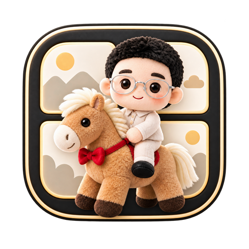

回填 Codex 结果
把 Codex 返回的新版分镜脚本与宫格图贴回这里，将自动生成一个新版本
这张宫格图的实际布局：
与图一致后，点击格子才能准确定位脚本

by YIQI玩AI
优先支持标准分镜格式（连续镜头共用上一级 【场景：…】，每个镜头依次为 镜头N / 时长 / 机位·景别·运镜 / 构图 / 画面内容 / 台词·心声·音效 / 情绪目标）；
也兼容 JSON 数组和「镜号 | 机位 | 场景 | 时长 | 画面 | 台词」行文本。导入后镜头进入「待分配」池，再由你手动划分批次。
最终视频画幅
首次导入时确认，导入成功后不可修改
默认从前往后选择：最多 9 镜且累计不超过 15 秒；可手动调整，但需连续选择
把 Codex 返回的新版分镜脚本与宫格图贴回这里，将自动生成一个新版本
为选中文字添加注释